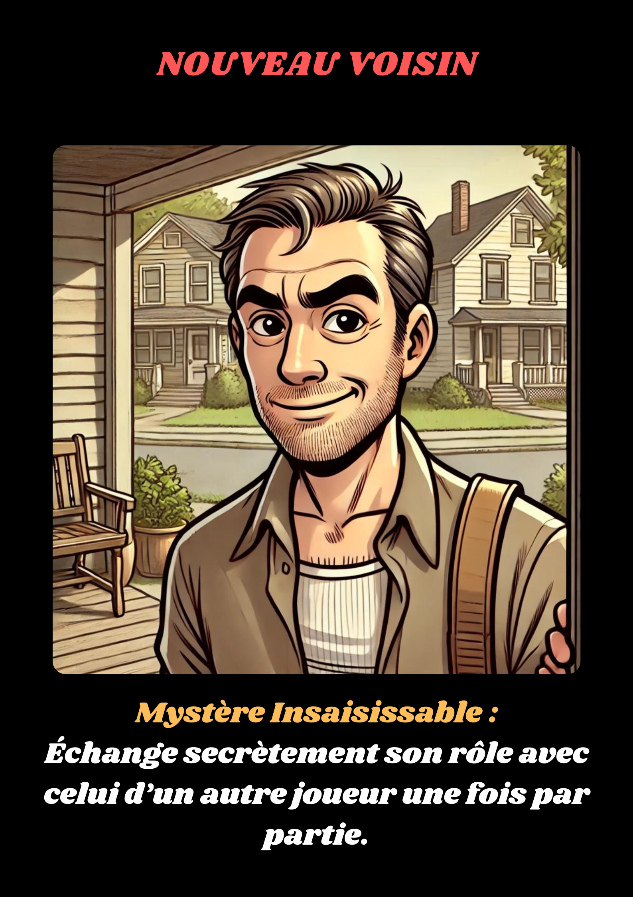

Le Nouveau Voisin est une figure intrigante pour tous. Il est arrivé récemment à Val-Lumière, et personne ne sait vraiment d’où il vient ni pourquoi il a choisi cette communauté. Son mystère fait de lui une cible facile des suspicions, mais il possède un atout secret. Son pouvoir lui permet d’échanger son rôle avec un autre joueur, brouillant ainsi les pistes. 